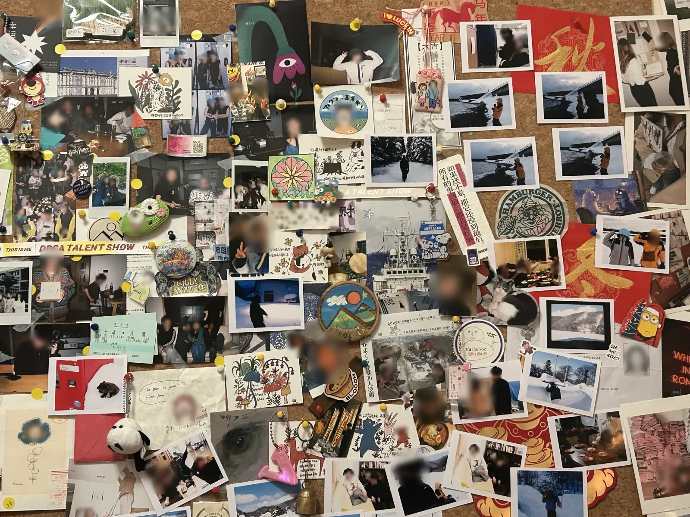

Kita-Sora
Map
Letters
Shop
Harbor Loop
Work with me
About
Subscribe
Menu
← World Map
Kita-Sora · The first shore
Notes from
home.
Three notes from home · tap a note to read

why I started leaving →
this thread began at home →
things I keep returning to →
china / a lived archive
back to the wall